Storyboard · La boucherie de Koffi
La boucherie de Koffi
Chaque plan du module, branches interactives comprises : images tirées de l’animation, direction visuelle, narration, textes à l’écran et interactions. Livrable 1, à valider avec les experts de l’ARAA.
Carte des embranchements
| Plan | Segment | Images | Direction visuelle (anglais) | Narration et sous-titres | Textes à l’écran |
|---|---|---|---|---|---|
| 1 | title 7s Version linéaire (WhatsApp) |
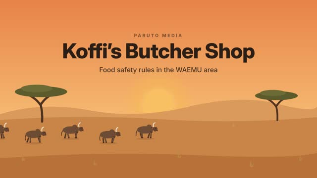 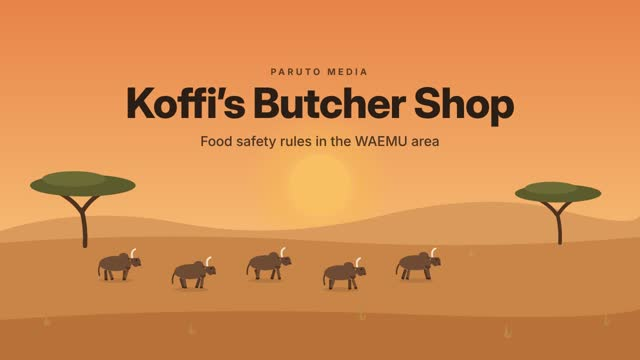 |
Dawn over the Sahel: sky gradient from #E7834A at the top to #F9D59C at the horizon, a large soft sun rising slowly, two flat acacia trees in dark olive silhouette, and five small dark-brown zebu cattle walking left to right along the horizon in a slow loop. From 0.8 s the title fades and slides up into the upper third: a small letter-spaced kicker "PARUTO MEDIA", the title "Koffi’s Butcher Shop" (very large, extra bold, #2B1E16) and the subtitle "Food safety rules in the WAEMU area" beneath it. | 0:01.2 La boucherie de Koffi : la sécurité sanitaire des aliments dans l’espace UEMOA. | — |
| 2 | meet 11s Version linéaire (WhatsApp) |
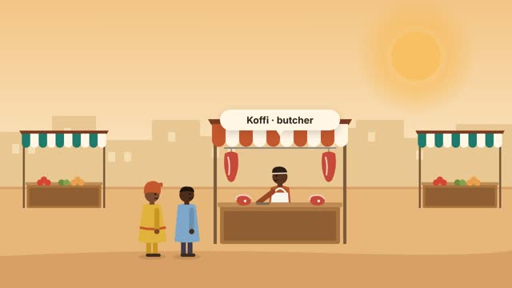 |
A busy city market: warm sky (#F2C584 to #FCEFD8), soft sand-coloured buildings with small windows in the background, a paved sand ground (#E7B77A). Market stalls have striped awnings with scalloped edges (terracotta and cream for meat stalls, teal and cream for vegetable stalls), wooden posts and a wooden counter. In the centre, Koffi's butcher stall: two cuts of meat hang from steel hooks at either side of the awning and cuts are laid on the counter. Koffi, a West African butcher: terracotta shirt, white apron, dark cap with a cream band, stands behind the counter facing left, working with a knife. Two customers walk in from the left (a woman in a yellow wrap dress with a terracotta head wrap, and a man in a light-blue shirt) and stop at the counter. At 1.4 s a cream speech-bubble name tag pops above Koffi: "Koffi · butcher". From 6.2 s Koffi hands a wrapped package of meat (marked with a small violet oval stamp) to the man. | 0:07.4 Voici Koffi, boucher au marché de la ville. 0:10.8 Sa viande vient d’éleveurs, passe par le marché à bétail et l’abattoir, avant d’arriver chez ses clients. |
— |
| 3 | chain 15.6s Version linéaire (WhatsApp) |
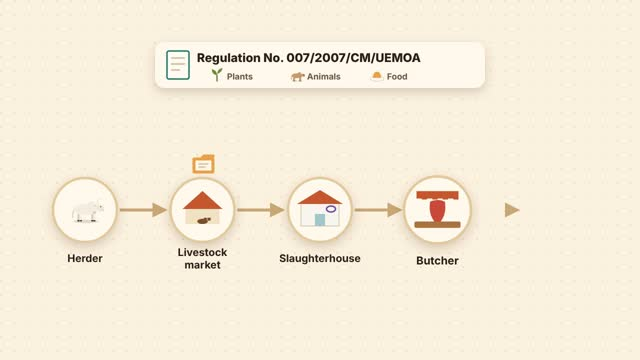 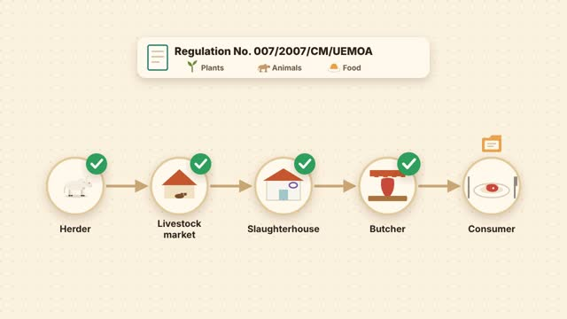 |
Cream board (#FBF1DF) with a fine dot pattern. At 0.3 s a cream card pops in at the top: a small document icon, the title "Regulation No. 007/2007/CM/UEMOA" and three small icons with labels "Plants" (a sprout), "Animals" (a cow), "Food" (a bowl). From 1.6 s five round cream nodes pop in from left to right along the middle, linked by sand-coloured arrows that draw on: "Herder" (a zebu), "Livestock market" (a terracotta market tent), "Slaughterhouse" (a white building with a terracotta roof and a violet stamp), "Butcher" (a striped awning with hanging meat), "Consumer" (a plate with meat and cutlery). From 2.4 s a small orange folder travels from node to node, pausing at each. From 10.9 s a green check in a circle pops above each node in turn. | 0:18.3 Dans l’UEMOA, le Règlement n°007/2007/CM/UEMOA fixe des règles communes de sécurité sanitaire des végétaux, des animaux et des aliments. 0:28.6 Chaque acteur de la chaîne est responsable de la sécurité de ce qu’il vend. |
— |
| 4 | choice1 13.2s (pause) Version linéaire (WhatsApp) |
 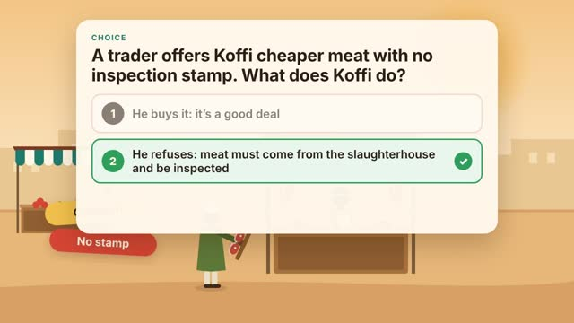 |
A busy city market: warm sky (#F2C584 to #FCEFD8), soft sand-coloured buildings with small windows in the background, a paved sand ground (#E7B77A). Market stalls have striped awnings with scalloped edges (terracotta and cream for meat stalls, teal and cream for vegetable stalls), wooden posts and a wooden counter. Koffi, a West African butcher: terracotta shirt, white apron, dark cap with a cream band, behind his counter facing left. A trader in a green boubou and cream cap walks in from the left (0–2.4 s) holding out a wooden tray with two cuts of meat, with no stamp on them. At 2.5 s a yellow pill "Cheaper!" pops near the tray, and at 3.1 s a red pill "No stamp". At 3.6 s a large cream card (rounded corners, soft shadow) slides down into the upper half: small teal uppercase label "Choice", the question in large bold text, then two option rows with numbered dark circles 1 and 2 (texts below). From 4.6 s show "Pause the video and choose: 1 or 2?" with a 3, 2, 1 countdown in an orange ring. At 7.8 s option 2 turns green with a white check in a green circle; option 1 dims to half opacity. | 0:33.9 Un vendeur propose à Koffi de la viande moins chère, sans cachet d’inspection. Que fait Koffi ? 0:41.6 Réponse 2 : on n’achète que de la viande inspectée, avec le cachet de l’abattoir. |
Un vendeur propose à Koffi de la viande moins chère, sans cachet d’inspection. Que fait Koffi ? 1. Il l’achète : c’est une bonne affaire 2. Il refuse : la viande doit venir de l’abattoir et être inspectée Interaction 1 → mauvaise réponse, blocked1 2 → bonne réponse, trace |
| 5 | blocked1 10.9s Version interactive seulement |
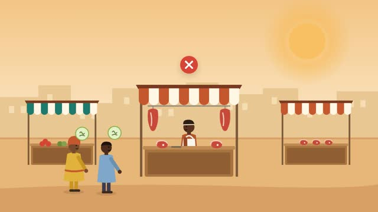 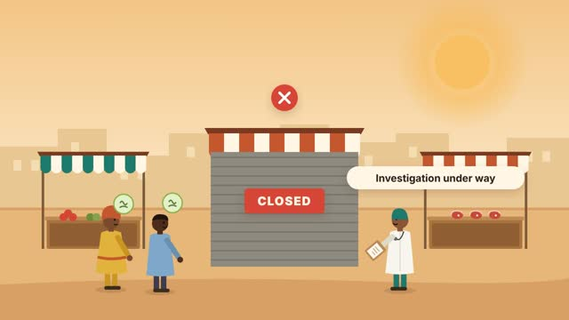 |
Branche : conséquence d’un mauvais choix, puis retour au choix. | +0.3s Cette viande n’a pas été inspectée. Des clients tombent malades. +4.4s Les services vétérinaires remontent jusqu’à Koffi : sa boutique est fermée le temps de l’enquête. |
— Interaction Branche : conséquence d’un mauvais choix, puis retour au choix. |
| 6 | trace 15.5s Version linéaire (WhatsApp) |
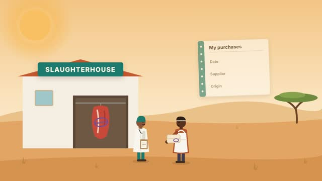 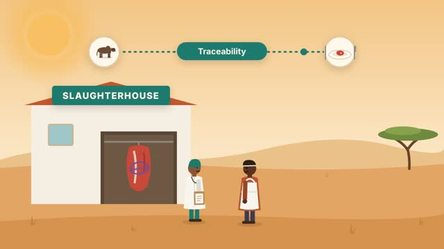 |
Outdoors at the edge of town (warm sky, sand hills, ochre ground, one acacia on the right, the sun at top left). On the left, a slaughterhouse: white walls, terracotta roof, a teal sign reading "SLAUGHTERHOUSE", a window and a dark open doorway with a steel rail where a half carcass hangs. At 1.0 s a violet oval inspection stamp reading "INSPECTED" slams onto the carcass. A veterinarian (white coat, teal cap, clipboard) stands by the door. Koffi walks in from the right and stops facing left; at 2.8 s a wrapped package with the violet stamp passes from the veterinarian to Koffi. At 4.6 s a large open notebook pops in at the upper right: a teal spine with rings, the title "My purchases" and three rows "Date", "Supplier", "Origin"; blue handwriting draws on each row in turn (5.4 s, 6.9 s, 8.4 s). At 10.0 s the notebook shrinks away. From 10.6 s a traceability line appears across the top: a round icon with a zebu on the left, a round icon with a plate on the right, a dotted teal line between them with a teal dot travelling back and forth, and a teal pill "Traceability" in the middle. | 0:47.1 Koffi achète à l’abattoir une viande inspectée, avec son cachet. 0:51.4 Dans son cahier, il note chaque achat : la date, le fournisseur, l’origine des animaux. 0:57.2 C’est la traçabilité : savoir d’où vient un produit et où il va. |
— |
| 7 | alertArrive 6s Version linéaire (WhatsApp) |
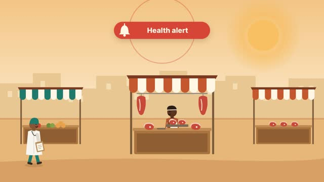 |
A busy city market: warm sky (#F2C584 to #FCEFD8), soft sand-coloured buildings with small windows in the background, a paved sand ground (#E7B77A). Market stalls have striped awnings with scalloped edges (terracotta and cream for meat stalls, teal and cream for vegetable stalls), wooden posts and a wooden counter. Three stalls in a row: vegetables on the left, Koffi's butcher stall in the centre (with a wooden tray holding two cuts of meat on the counter), another meat stall on the right. At 0.4 s a red pill with a white bell icon reading "Health alert" pops at the top centre, with a red ring pulsing outward from it. From 1.2 s a veterinarian in a white coat and teal cap walks in from the left and stops in front of the left stall. | 1:02.6 Un jour, les services vétérinaires lancent une alerte sur un lot de viande. | — |
| 8 | choice2 8s (pause) Version interactive seulement |
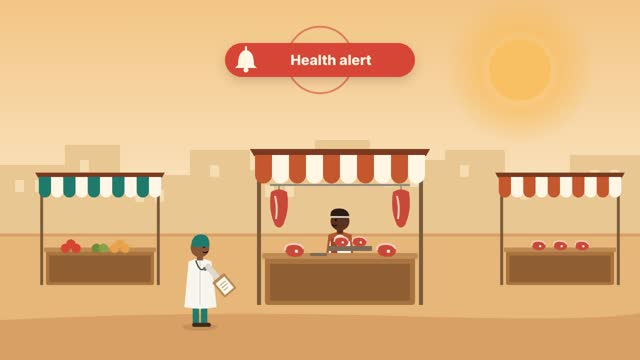 |
Carte de choix sur la scène figée ; la vidéo attend la réponse du spectateur. | +0.3s Comment Koffi aide-t-il les services ? | Comment Koffi aide-t-il les services ? 1. Il ne dit rien et continue de vendre 2. Il montre son cahier et retire la viande concernée Interaction 1 → mauvaise réponse, blocked2 2 → bonne réponse, alertResolve |
| 9 | blocked2 7.7s Version interactive seulement |
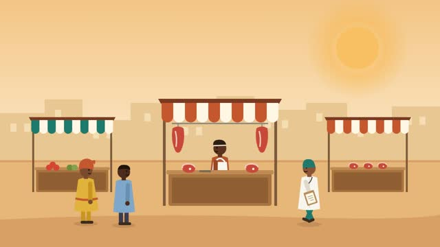 |
Branche : conséquence d’un mauvais choix, puis retour au choix. | +0.3s Sans information, les services ne retrouvent pas le lot. +3.8s Tout le marché est contrôlé et les ventes s’arrêtent. |
— Interaction Branche : conséquence d’un mauvais choix, puis retour au choix. |
| 10 | alertResolve 12.7s Version linéaire (WhatsApp) |
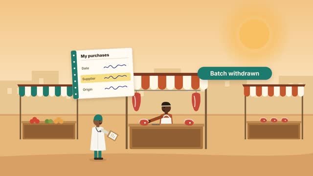 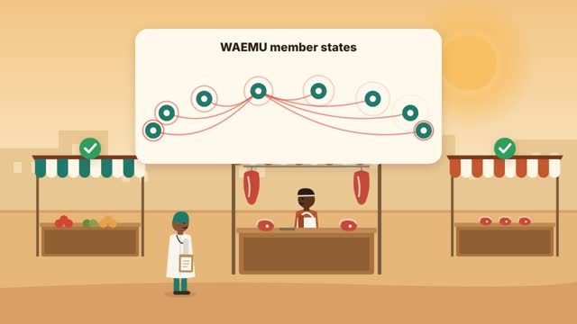 |
Continuing the market scene. At 0.3 s Koffi's notebook (same design, rows already written) pops up between Koffi and the veterinarian; Koffi holds it out. At 1.0 s a yellow highlighter sweeps across the "Supplier" row. At 1.8 s a red tag "Batch concerned" appears above the tray on Koffi's counter; from 2.6 s the tray lifts and moves off to the right and out of the market. At 3.4 s a teal pill "Batch withdrawn" pops; at 4.3 s a pale green pill "The market carries on" and green checks above the other two stalls. At 5.0 s the notebook fades. At 6.0 s a large cream panel slides in at the top titled "WAEMU member states", with eight teal dots on a gentle arc; red curved lines draw from one dot to each of the others in turn, and red rings pulse outward from the dots as the alert reaches them. No real map, country names or flags. | 1:08.5 Grâce au cahier, le lot est retrouvé et retiré. Le reste du marché continue. 1:14.3 Dans l’UEMOA, les États membres coopèrent et partagent les alertes pour protéger les consommateurs. |
— |
| 11 | quiz 30s Version linéaire (WhatsApp) |
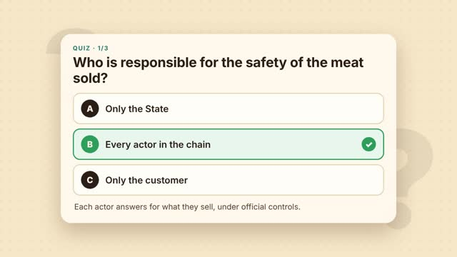 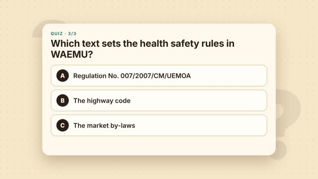 |
Warm cream background (#F7E7C9) with a dot pattern and two very large, faint, slowly rocking question marks. Three questions, 10 s each. Each fades in as a centred cream card: teal label "Quiz · 1/3" (2/3, 3/3), the question in large bold text, and three option rows with dark lettered circles A, B, C. At 4.3 s into each question the correct option turns green with a white check, and a one-line explanation appears under the options. Each card fades out in its last 0.3 s. | Qui est responsable de la sécurité de la viande vendue ? … De l’éleveur au boucher, chacun répond de ce qu’il vend, sous le contrôle des services officiels. Que veut dire « traçabilité » ? … Elle permet de retrouver et de retirer vite un lot à risque. Quel texte fixe les règles de sécurité sanitaire dans l’UEMOA ? … Il couvre la sécurité sanitaire des végétaux, des animaux et des aliments. |
1. Qui est responsable de la sécurité de la viande vendue ? A. Seulement l’État · B. Chaque acteur de la chaîne · C. Seulement le client 2. Que veut dire « traçabilité » ? A. Savoir d’où vient un produit et où il va · B. Vendre plus vite · C. Baisser les prix 3. Quel texte fixe les règles de sécurité sanitaire dans l’UEMOA ? A. Le Règlement n°007/2007/CM/UEMOA · B. Le code de la route · C. Le règlement du marché Interaction Trois questions. Interactive : le spectateur répond, voit la correction et son score. Linéaire : la bonne réponse s’affiche après quelques secondes. |
| 12 | recap 9s Version linéaire (WhatsApp) |
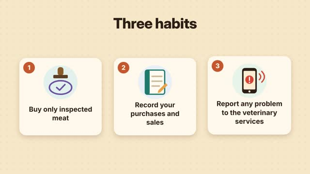 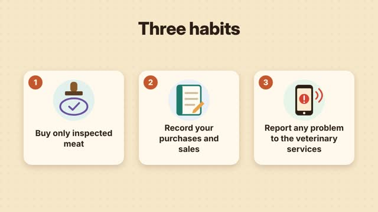 |
Same cream background. The title "Three habits" fades in at the top. Three cream cards with soft shadows pop up in sequence (0.6 s, 1.5 s, 2.4 s), each with a terracotta number badge (1, 2, 3), a pastel circle with an icon and a bold text of two to four lines: 1 a rubber stamp over a violet oval with a check, "Buy only inspected meat"; 2 a teal notebook with a pencil, "Record your purchases and sales"; 3 a phone showing a red alert with signal waves, "Report any problem to the veterinary services". | 1:51.3 Une chaîne sûre, du troupeau à l’assiette. | — |
| 13 | end 5s Version linéaire (WhatsApp) |
  |
Dark brown background (#1E1712). Fade in, centred: small letter-spaced "Produced by" in muted beige, the Paruto Media logo in white below it (use the uploaded paruto-media-logo-white.svg; if no file is uploaded, set "PARUTO MEDIA" in white, wide letter-spacing), then a small grey line: "Demonstration sample · content to be validated by technical experts". | — | — |
Storyboard · Koffi’s Butcher Shop
Koffi’s Butcher Shop
Every shot of the module, interactive branches included: frames taken from the animation, visual direction, narration, on-screen text and interactions. Deliverable 1, to be validated with ARAA’s experts.
Branching map
| Shot | Segment | Frames | Visual direction | Narration and captions | On-screen text |
|---|---|---|---|---|---|
| 1 | title 7s Linear version (WhatsApp) |
Dawn over the Sahel: sky gradient from #E7834A at the top to #F9D59C at the horizon, a large soft sun rising slowly, two flat acacia trees in dark olive silhouette, and five small dark-brown zebu cattle walking left to right along the horizon in a slow loop. From 0.8 s the title fades and slides up into the upper third: a small letter-spaced kicker "PARUTO MEDIA", the title "Koffi’s Butcher Shop" (very large, extra bold, #2B1E16) and the subtitle "Food safety rules in the WAEMU area" beneath it. | 0:01.2 Koffi’s butcher shop: food safety rules in the WAEMU area. | — | |
| 2 | meet 11s Linear version (WhatsApp) |
A busy city market: warm sky (#F2C584 to #FCEFD8), soft sand-coloured buildings with small windows in the background, a paved sand ground (#E7B77A). Market stalls have striped awnings with scalloped edges (terracotta and cream for meat stalls, teal and cream for vegetable stalls), wooden posts and a wooden counter. In the centre, Koffi's butcher stall: two cuts of meat hang from steel hooks at either side of the awning and cuts are laid on the counter. Koffi, a West African butcher: terracotta shirt, white apron, dark cap with a cream band, stands behind the counter facing left, working with a knife. Two customers walk in from the left (a woman in a yellow wrap dress with a terracotta head wrap, and a man in a light-blue shirt) and stop at the counter. At 1.4 s a cream speech-bubble name tag pops above Koffi: "Koffi · butcher". From 6.2 s Koffi hands a wrapped package of meat (marked with a small violet oval stamp) to the man. | 0:07.4 This is Koffi, a butcher at the city market. 0:10.8 His meat comes from herders, passes through the livestock market and the slaughterhouse, then reaches his customers. |
— | |
| 3 | chain 15.6s Linear version (WhatsApp) |
Cream board (#FBF1DF) with a fine dot pattern. At 0.3 s a cream card pops in at the top: a small document icon, the title "Regulation No. 007/2007/CM/UEMOA" and three small icons with labels "Plants" (a sprout), "Animals" (a cow), "Food" (a bowl). From 1.6 s five round cream nodes pop in from left to right along the middle, linked by sand-coloured arrows that draw on: "Herder" (a zebu), "Livestock market" (a terracotta market tent), "Slaughterhouse" (a white building with a terracotta roof and a violet stamp), "Butcher" (a striped awning with hanging meat), "Consumer" (a plate with meat and cutlery). From 2.4 s a small orange folder travels from node to node, pausing at each. From 10.9 s a green check in a circle pops above each node in turn. | 0:18.3 In WAEMU, Regulation No. 007/2007/CM/UEMOA sets common rules for the safety of plants, animals and food. 0:28.6 Every actor in the chain is responsible for the safety of what they sell. |
— | |
| 4 | choice1 13.2s (pause) Linear version (WhatsApp) |
|
A busy city market: warm sky (#F2C584 to #FCEFD8), soft sand-coloured buildings with small windows in the background, a paved sand ground (#E7B77A). Market stalls have striped awnings with scalloped edges (terracotta and cream for meat stalls, teal and cream for vegetable stalls), wooden posts and a wooden counter. Koffi, a West African butcher: terracotta shirt, white apron, dark cap with a cream band, behind his counter facing left. A trader in a green boubou and cream cap walks in from the left (0–2.4 s) holding out a wooden tray with two cuts of meat, with no stamp on them. At 2.5 s a yellow pill "Cheaper!" pops near the tray, and at 3.1 s a red pill "No stamp". At 3.6 s a large cream card (rounded corners, soft shadow) slides down into the upper half: small teal uppercase label "Choice", the question in large bold text, then two option rows with numbered dark circles 1 and 2 (texts below). From 4.6 s show "Pause the video and choose: 1 or 2?" with a 3, 2, 1 countdown in an orange ring. At 7.8 s option 2 turns green with a white check in a green circle; option 1 dims to half opacity. | 0:33.9 A trader offers Koffi cheaper meat with no inspection stamp. What does Koffi do? 0:41.6 Answer 2: only buy inspected meat, with the slaughterhouse stamp. |
A trader offers Koffi cheaper meat with no inspection stamp. What does Koffi do? 1. He buys it: it’s a good deal 2. He refuses: meat must come from the slaughterhouse and be inspected Interaction 1 → wrong, blocked1 2 → correct, trace |
| 5 | blocked1 10.9s Interactive version only |
Branch: the consequence of a wrong choice, then back to the choice. | +0.3s This meat was not inspected. Some customers fall ill. +4.4s The veterinary services trace it back to Koffi: his shop is closed during the investigation. |
— Interaction Branch: the consequence of a wrong choice, then back to the choice. |
|
| 6 | trace 15.5s Linear version (WhatsApp) |
Outdoors at the edge of town (warm sky, sand hills, ochre ground, one acacia on the right, the sun at top left). On the left, a slaughterhouse: white walls, terracotta roof, a teal sign reading "SLAUGHTERHOUSE", a window and a dark open doorway with a steel rail where a half carcass hangs. At 1.0 s a violet oval inspection stamp reading "INSPECTED" slams onto the carcass. A veterinarian (white coat, teal cap, clipboard) stands by the door. Koffi walks in from the right and stops facing left; at 2.8 s a wrapped package with the violet stamp passes from the veterinarian to Koffi. At 4.6 s a large open notebook pops in at the upper right: a teal spine with rings, the title "My purchases" and three rows "Date", "Supplier", "Origin"; blue handwriting draws on each row in turn (5.4 s, 6.9 s, 8.4 s). At 10.0 s the notebook shrinks away. From 10.6 s a traceability line appears across the top: a round icon with a zebu on the left, a round icon with a plate on the right, a dotted teal line between them with a teal dot travelling back and forth, and a teal pill "Traceability" in the middle. | 0:47.1 Koffi buys inspected meat at the slaughterhouse, with its stamp. 0:51.4 In his notebook he records every purchase: the date, the supplier, where the animals came from. 0:57.2 That is traceability: knowing where a product comes from and where it goes. |
— | |
| 7 | alertArrive 6s Linear version (WhatsApp) |
A busy city market: warm sky (#F2C584 to #FCEFD8), soft sand-coloured buildings with small windows in the background, a paved sand ground (#E7B77A). Market stalls have striped awnings with scalloped edges (terracotta and cream for meat stalls, teal and cream for vegetable stalls), wooden posts and a wooden counter. Three stalls in a row: vegetables on the left, Koffi's butcher stall in the centre (with a wooden tray holding two cuts of meat on the counter), another meat stall on the right. At 0.4 s a red pill with a white bell icon reading "Health alert" pops at the top centre, with a red ring pulsing outward from it. From 1.2 s a veterinarian in a white coat and teal cap walks in from the left and stops in front of the left stall. | 1:02.6 One day, the veterinary services issue an alert about a batch of meat. | — | |
| 8 | choice2 8s (pause) Interactive version only |
Choice card over the frozen scene; the video waits for the viewer’s answer. | +0.3s How does Koffi help the services? | How does Koffi help the services? 1. He says nothing and keeps selling 2. He shows his notebook and withdraws the meat concerned Interaction 1 → wrong, blocked2 2 → correct, alertResolve |
|
| 9 | blocked2 7.7s Interactive version only |
Branch: the consequence of a wrong choice, then back to the choice. | +0.3s Without information, the services cannot find the batch. +3.8s The whole market is checked and sales stop. |
— Interaction Branch: the consequence of a wrong choice, then back to the choice. |
|
| 10 | alertResolve 12.7s Linear version (WhatsApp) |
Continuing the market scene. At 0.3 s Koffi's notebook (same design, rows already written) pops up between Koffi and the veterinarian; Koffi holds it out. At 1.0 s a yellow highlighter sweeps across the "Supplier" row. At 1.8 s a red tag "Batch concerned" appears above the tray on Koffi's counter; from 2.6 s the tray lifts and moves off to the right and out of the market. At 3.4 s a teal pill "Batch withdrawn" pops; at 4.3 s a pale green pill "The market carries on" and green checks above the other two stalls. At 5.0 s the notebook fades. At 6.0 s a large cream panel slides in at the top titled "WAEMU member states", with eight teal dots on a gentle arc; red curved lines draw from one dot to each of the others in turn, and red rings pulse outward from the dots as the alert reaches them. No real map, country names or flags. | 1:08.5 Thanks to the notebook, the batch is found and withdrawn. The rest of the market carries on. 1:14.3 In WAEMU, member states cooperate and share alerts to protect consumers. |
— | |
| 11 | quiz 30s Linear version (WhatsApp) |
Warm cream background (#F7E7C9) with a dot pattern and two very large, faint, slowly rocking question marks. Three questions, 10 s each. Each fades in as a centred cream card: teal label "Quiz · 1/3" (2/3, 3/3), the question in large bold text, and three option rows with dark lettered circles A, B, C. At 4.3 s into each question the correct option turns green with a white check, and a one-line explanation appears under the options. Each card fades out in its last 0.3 s. | Who is responsible for the safety of the meat sold? … Each actor answers for what they sell, under official controls. What does “traceability” mean? … It makes it possible to find and withdraw a risky batch quickly. Which text sets the health safety rules in WAEMU? … It covers the safety of plants, animals and food. |
1. Who is responsible for the safety of the meat sold? A. Only the State · B. Every actor in the chain · C. Only the customer 2. What does “traceability” mean? A. Knowing where a product comes from and where it goes · B. Selling faster · C. Cutting prices 3. Which text sets the health safety rules in WAEMU? A. Regulation No. 007/2007/CM/UEMOA · B. The highway code · C. The market by-laws Interaction Three questions. Interactive: the viewer answers, sees the correction and a score. Linear: the right answer is revealed after a few seconds. |
|
| 12 | recap 9s Linear version (WhatsApp) |
Same cream background. The title "Three habits" fades in at the top. Three cream cards with soft shadows pop up in sequence (0.6 s, 1.5 s, 2.4 s), each with a terracotta number badge (1, 2, 3), a pastel circle with an icon and a bold text of two to four lines: 1 a rubber stamp over a violet oval with a check, "Buy only inspected meat"; 2 a teal notebook with a pencil, "Record your purchases and sales"; 3 a phone showing a red alert with signal waves, "Report any problem to the veterinary services". | 1:51.3 A safe chain, from herd to plate. | — | |
| 13 | end 5s Linear version (WhatsApp) |
|
Dark brown background (#1E1712). Fade in, centred: small letter-spaced "Produced by" in muted beige, the Paruto Media logo in white below it (use the uploaded paruto-media-logo-white.svg; if no file is uploaded, set "PARUTO MEDIA" in white, wide letter-spacing), then a small grey line: "Demonstration sample · content to be validated by technical experts". | — | — |